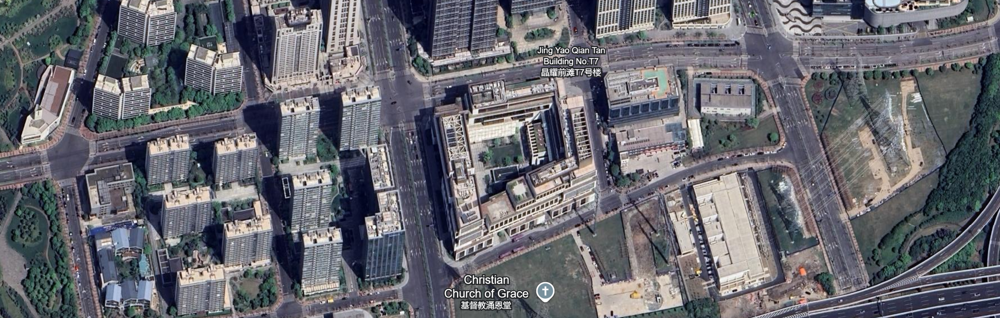

Lab 01 · September 2026
Entry 1: NYU Shanghai
The question
Where is the NYU Shanghai campus?
The data
Data from Google Earth Engine is credited to Airbus, and dated at 04/01/2025 and earlier. The map is missing people, street/building names, and front-side views.
The method
Satellite map is a screenshot from Google Earth Engine webpage, taken on September 5, 2026. Labels were set to "Exploration" mode, and camera was zoomed in to around 755m.

What I found
The trapezoidal campus is shaped as a border of buildings around a school lawn. Looking closer at the roads, three purple NYU shuttle buses are stopping near the entry gate, supporting the idea that this building hosts NYU Shanghai's campus.
What this does not show
A limitation on this satellite view is that there are few labels around the campus. We cannot define the actual address of the campus, and we must make assumptions of students, which are not visible in the image. Through this map, we can only get a sense of what the campus looks like from an aerial view, and the general infrastructure that surrounds it. We only see the physical materials of the building, and not the community that it holds.
AI use: No AI tools were used for this entry.